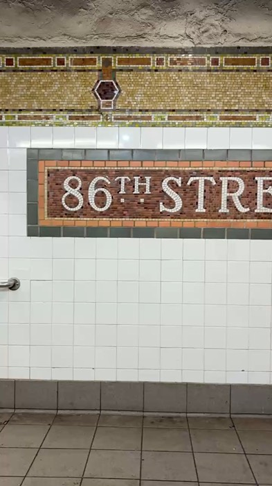
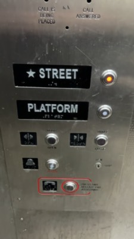
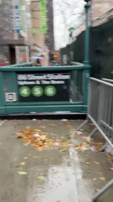

Where we are, 27 Nov 2026
→Nothing new gets built until the tests below say what works. Everything is tracked in GitHub issue #290.
Done
- 86 St photos, video, sensor log and NaviLens codes catalogued in Octo (PR #286)
- Plan for finding a rider without GPS (
docs/PLAN-underground-guidance.md) - Tests that need no true position (PR #256)
- PostGIS database running on the server, empty (PR #255)
- Tracker issue #290 with all context
In flight
- NaviLens code reader, reads photos offline (PR #261)
- How stations connect inside, step-free routes (PR #263)
- Agent answers step-free routes (PR #268)
- Station walk lighting and shadows (PR #272)
- Guide learns each rider's step length
Not started
- Station data loaded into PostGIS
- The four tests below
- Native app (barometer, pocket mode, ARKit, watch)
- Any station scan
- A defect test for the 3D walk that can actually fail
Waiting on a decision
- Rebuild the 3D walk from scans, or keep patching
- Does anyone have an iPhone Pro or iPad Pro
- Which test runs first
- Pass mark in metres for each stage
What we have tried
→Two separate 3D engines and one guide, each fixed one recording at a time. Open any step for what happened.
Oct 2026 First-person station view from OpenStreetMap patched
Walls, floors and ceilings built from OpenStreetMap's centre lines and level tags on a half-metre grid (src/lib/map/stationWalk.ts).
- #71 plain grey walls, no signs
- #73 jagged gaps at the top and foot of walls
- #95 ceilings and floors cut across stairs
- #97 mezzanines came out as 3 m strips
- #102 stairs were open chutes
- #111 jagged stairwell edges from the grid
Each was fixed, and the next recording found the next one.
Nov 2026 Fulton St traced by hand misfit 1–1.5 m
Nine rooms traced from screenshots of the reference model with OpenCV. Only 33 of 52 stairs landed on a floor. A run of fixes (#113, #115, #117, #119, #121) kept chasing the same stair.
Nov 2026 Dollhouse walks from the Project Subway model 149 defects left
Fulton St, then City Hall and Barclays, cropped from Project Subway NYC (used with permission). The model has floors and stairs but no walls, ceilings, gates or signs, so walls are pushed up a fixed 3 m from the floor edges.
- #129 dollhouse view added
- #161 City Hall and Barclays are drawn twice as deep; halved by hand, about 4 m off the tracks
- PR #168 walls merged into one solid; a ray check still finds 149 problem spots, 52 of them holes
- The simulated walker still stops on 4 walks and falls through a floor on 3
14 Nov Hackathon walks filmed and logged data
Cortlandt St to Union Sq filmed turn by turn, with sensor recordings for each leg. Union Sq on 13 Nov became the first replay case.
20 Nov Replayed Union Sq with GPS withheld 63 m off
The guide's dot ended about 63 m past the second elevator. The rider took 296 steps where the guide counts 212. Measuring the step on the platform first cut the miss to about 23 m. The compass was off by between +54 and −147 degrees, so it was ruled out.
20 Nov Station look: tone curve, shadows, glowing lamps PR #272
Fixes how the walk is lit, not where walls are. The shapes stay as wrong as before.
20 Nov NaviLens reader written PR #261
Reads a code's 25-cell pattern from a picture, offline, in a folder that can be deleted if permission is withdrawn. First tried on real codes on 27 Nov.
27 Nov 86 St partner walk catalogued PR #286
411 MB cut to 54 MB, faces blurred, stored in Octo and searchable by station and by code. Three codes read and checked; the reader needed a looser white-frame check for the dim "No Exit" code.
Why the 3D walk keeps breaking
→The walls, ceilings and floors are guessed rather than measured. Every place a guess meets another guess becomes a seam to patch.
Today: guessed
Proposed: measured
Walls and ceilings guessed
Built from map centre lines on a half-metre grid, so stair edges are jagged.
Fulton St model is a diagram
Floors and stairs only. Walls pushed up 3 m everywhere; 149 problem spots remain.
Two models the wrong size
City Hall and Barclays drawn twice as deep, halved by hand, about 4 m off the tracks.
Signs placed by rule
Not where the real signs hang, and they repeat the same words.
The defect test cannot fail
It checks for zero or more defects, so nothing stops new holes.
Two separate engines
A fix to the street-view walk never reaches the dollhouse walk.
The dot drifts
About 63 m off at Union Sq with GPS withheld.
GPS is useless underground
At 86 St it barely moved while the rider walked the platform.
What the phone actually sensed at 86 St
→Real data from the partner's walk on 26 Nov: up a stair, along the platform, up elevator EL273 to the street. The video starts 13 seconds into the sensor log, so we can see where they were at every second.
The barometer sees every level change
A stair climb of about 4.8 m and the elevator ride of about 5 m stand out. On the flat platform the reading wanders about 1.5 m, so it tells levels apart but not where you are on one.
GPS gives up below the street
Reported accuracy mostly 16 to 24 m with jumps to 354 and 550 m, while the position barely moved (within about 10 m) as the rider walked the platform.
Accelerometer
Counts steps well. Step length varies by rider: 296 steps at Union Sq where the guide counted 212. The guide now learns each rider's step at the first confirmed sign.
Gyroscope
Good for turns over a few seconds. Drifts over minutes, so it needs a reset at known spots.
Compass
Steel in stations throws it off. At Union Sq it was off by between +54 and −147 degrees leg by leg.
Tech map: what each option can and cannot do
→No single option covers everything. Read across a row to see what it gives; read down a column to see what covers a need.
How Apple Maps and Google Maps get their accuracy, and our version
They do not track riders inside NYC subway stations either. Outdoors their accuracy comes from references we can copy underground.
- Snapping to the road network → snapping to the station's walking network (MTA draft Pathways in PostGIS)
- Matching the camera against Street View → NaviLens codes and signs now; a station scan later
- 3D buildings → station levels plus the barometer
- Wi-Fi surveys → possible in stations, Android native app only
- Blending every sensor → ARKit or ARCore with the camera up; steps and barometer in a pocket
The full plan, as one map
→Sensors move the dot. Known spots fix it. The walking network keeps it on real paths. The 3D walk is a separate track that only needs measured shapes.
The plan's steps (from docs/PLAN-underground-guidance.md) and what was added on 27 Nov
- 0. Replay test: checks on real recordings. First set done (PR #256).
- 1. Station as data: levels, paths and checkpoints in PostGIS from the MTA draft Pathways. Database running, empty.
- 2. Position: the dot learns the rider's step. Target under 25 m at the far elevator on recordings it was not tuned on.
- 3. Known spots: elevator rides from the barometer and NaviLens codes reset the dot. Target under about 12 m before each reset.
- 4. Checks: held-back recordings and agents as test riders.
- 5. Native app: pocket, spoken turns, barometer.
- 6. Watch: a tap at each instruction.
Added 27 Nov: ARKit and ARCore tracking with the camera up, Wi-Fi on Android, COLMAP and LiDAR tests, the 3D walk's problems, the synced video as a source of true positions, and offline as a requirement for stage 1.
Four tests before we build anything
→Each ends in a number. The first two need only files we already have.
86 St replay
Snap the dot to the station network, reset at the three codes and the elevator ride, score against the video.
Pass: within about 12 m at every checkpoint.
Needs: nothing new.
COLMAP on the video
Rebuild the 86 St walk in 3D from the video frames alone.
Pass: most frames placed (over 80%), straight platform, right length.
Needs: nothing new.
LiDAR test scan
Scan the 86 St stair foot, platform and elevator landing.
Pass: loop ends meet within about 1 m; tape checks match.
Needs: an iPhone Pro or iPad Pro.
ARKit walk
Walk the same route there and back with an ARKit logger, camera up, then in a pocket.
Pass: loop gap of a couple of metres with the camera up.
Needs: any recent iPhone.
What we have so far
→From the 86 St walk on 26 Nov, faces blurred. Stored in Octo under station-media/86-st-6-train-2026-11-26/.



NaviLens codes found
Station coverage
What we hold for each station. A question mark means we have not checked.
Data and datasets
- MTA draft station walking network (2021): 230 stations, 3,810 paths, 401 elevators, sign text on 3,307 paths. Permission to use it.
- Live MTA elevator and escalator feed, same identifiers
- Project Subway NYC models of Fulton St, City Hall and Barclays, used with permission
- OpenStreetMap station lines and levels
- Octo:
core.station_media,core.navilens_sightings,core.navilens_codes
Recordings and film
- 86 St: video, sensor log with barometer, 4 photos (Octo)
- Union Sq evening walk, 13 Nov (replay case)
- Cortlandt St to Union Sq, filmed turn by turn, with sensor logs per leg (starter pack in Octo)
- 74 St-Broadway 7-to-R transfer, filmed (PR #237)
- Partner's Drive "3D models" folder: Fulton St step-free models and entry and exit videos, Union Sq videos, and folders for NYU MetroTech, 67 Av exit, Roosevelt, Queens Plaza and Pratt, not yet opened
Tools, code and people
- Station Recorder in the app, uploads walks in parts
pnpm walk:from-sensor-loggerconverts Sensor Logger exportspnpm media:find,pnpm media:codessearch the catalogue- NaviLens reader, offline (PR #261)
- PostGIS on the server, empty
- NaviLens team: permission given and they offered help
- MTA has NaviLens codes at 50 stations in Manhattan and the Bronx
How you can help map stations
→Pick what you have. The tasks that fit light up.
Scanning a station with an iPhone Pro or iPad Pro
→Pro models have a LiDAR sensor that measures distance with light, so a scan comes out at real size. Short sections pinned to known spots stop a long platform from drifting. Proposal
Handheld only. MTA rules allow photography but not tripods, lights or other added equipment without permission. Stay behind the yellow edge and never block a stair or door.
A NaviLens code, a sign, a stair end or an elevator door. Photograph it at the start and end. These are what lets us line the sections up.
Overlap the next section by 3 to 5 m. Walk slowly with the device at chest height, sweeping floor, wall and ceiling. Get the full top and bottom of every stair.
A stair's width, the gap between two columns, or a door. Photograph the tape against it. This is how we check the scan's accuracy.
Phone at chest height, walking the same line. It gives us the look and a second check.
Name files station-section-date (for example 86st-s2-2026-12-03) and add them to the shared "3D models" Drive folder. A maintainer blurs faces and catalogues them in Octo.
Which apps
- Polycam: LiDAR and photo modes, many export formats
- Scaniverse: free, LiDAR scans and on-device splats
- 3d Scanner App: free, raw point clouds
- SiteScape: built for large spaces
We will pick one after the 86 St test scan so every contributor uses the same settings.
What to export
- Point cloud:
.plyor.e57(best for measuring) - Mesh:
.objor.usdz(best for the walk) - Keep the app's raw project if it offers one
What scans badly, and what to note
- Glass (elevator shafts) and shiny steel
- Black surfaces and dim corners
- Anything beyond about 5 m: high ceilings, across the tracks
- Moving trains and people
Note these spots in a sentence with the upload so we know which gaps are real.
Getting more people to contribute
→Proposals None of these is set up yet.
A station coverage board
A public map of which stations have a walk, codes, a scan. People pick an empty station, like claiming a square.
Scan nights
Three or four Pro devices per station, one evening, sections split between people. Like the 14 Nov hackathon, with a scan list.
Blind and low-vision testers first
Paid test sessions with blindness and disability organisations. They test every stage, and the watch is built for them.
University labs
GIS, robotics and architecture students, scanning as coursework. The partner's folders already include NYU MetroTech and Pratt.
The NaviLens team
They offered help. Ask for their code locations per station, which would give us known spots without anyone walking.
Transit fans
Subway enthusiasts know stations well and many carry Pro phones. A 15-minute task per section keeps it easy.
Credit on every station
Contributor names on each station they mapped, and an open licence for the scans (still to decide).
A device lending pool
One or two iPad Pros lent out for a week, so people without a Pro phone can scan too.
Fifteen minutes is enough
One stair, one section, one code photo. Small tasks bring in people who would never sign up for a whole station.
Decisions waiting
→Rebuild or patch the 3D walk
Rebuild from scans, or keep fixing guessed shapes. The COLMAP and LiDAR tests inform this.
A Pro device
Does anyone on the team or among partners have an iPhone Pro or iPad Pro for the 86 St test scan?
Which test first
The 86 St replay and COLMAP tests need nothing new.
Pass marks
How many metres off is good enough for camera, pocket and watch.
Scan licence and privacy
Who owns contributed scans, how they are shared, and how people in them are removed.
Native app timing
Pocket mode, the barometer, ARKit on iPhone and the watch all need it.